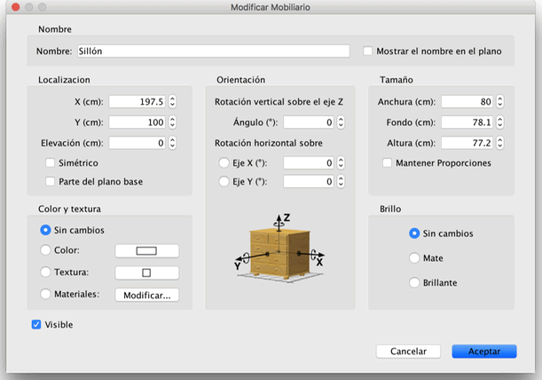

| Editando mobiliario | |||
Puedes editar la localización, el tamaño y el ángulo del mobiliario,
ya sea con el ratón o con el menú Mobiliario > Modificar.... Cuando una pieza está seleccionada en el plano, puedes cambiar su tamaño, elevación o ángulo con uno de los cuatro indicadores que aparecen en cada esquina de la pieza seleccionada.
|

|
Cuando el puntero del ratón está sobre una de las esquinas, cambia
para indicar que puedes arrastrar y soltar esa esquina para cambiar
el atributo de la pieza seleccionada de mobiliario. Mientras presionas
el botón del ratón, un texto de ayuda muestra el valor del atributo
editado. Una pieza de mobiliario también puede ser editada en su panel, haciendo doble clic en el plano o la lista de mobiliario, o eligiendo Mobiliario > Modificar... después de seleccionarlo.  En el panel de mobiliario, puedes cambiar el nombre, la abcisa (X)
y la ordenada (Y) de su centro, la elevación de la parte inferior desde
el suelo, su anchura, su fondo, su altura, su color o textura, su visibilidad,
su ángulo de rotación, si su nombre sera mostrado en el plano o no y
si su modelo 3D es reflejado (como en un espejo). |
|